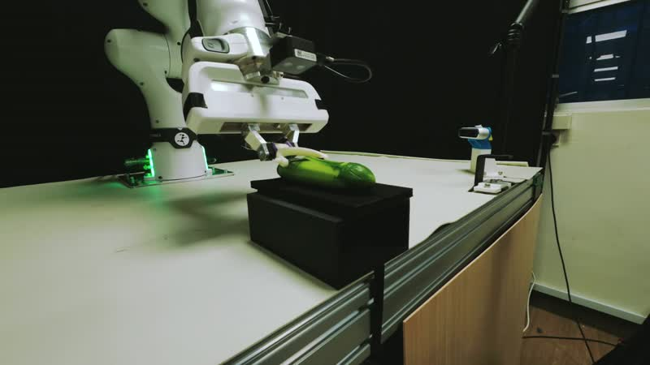
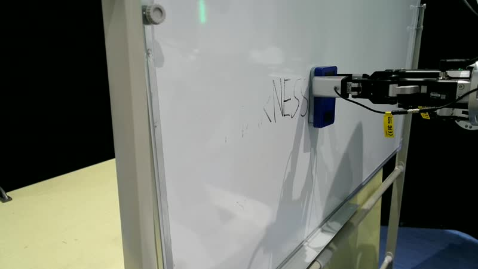
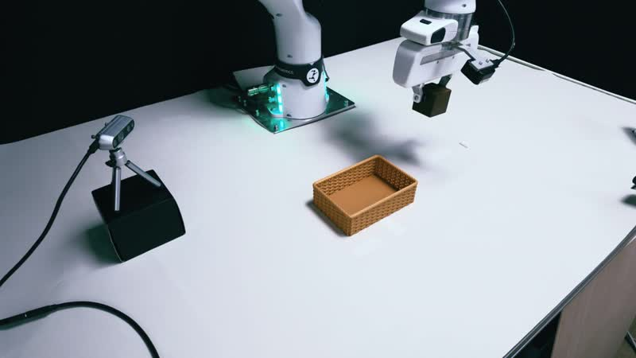
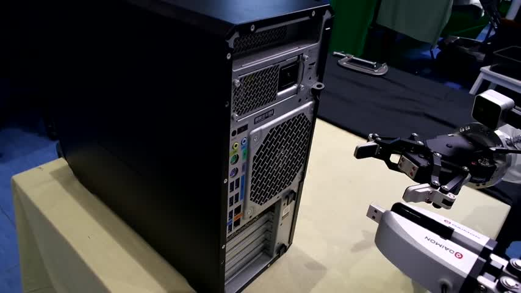
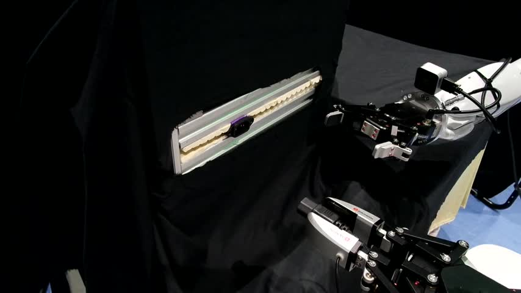

Peeling
View experimentFranka

Contact Harness
Contact Harness uses reusable textual skills to help a frozen VLM interpret visual, force and tactile feedback during contact. Compliant execution adjusts motion using real-time force feedback between the agent’s decisions, without model fine-tuning or task demonstrations.







15 connectors
 Photo preview
Photo previewRokae
Loading process…
A small-scale benchmark for contact-rich manipulation, mimicking real-world insertion, wiping, writing, and pivoting with stricter success conditions.
Four contact tasks
Franka in MuJoCo. 50 human demonstrations per task for baseline training.
Contact Harness uses no task demonstrations or model fine-tuning.
Frozen VLM reasoning with textual skills and compliant execution. No model fine-tuning.

One harness across Rokae, Franka, and a simulated Franka in MuJoCo.

136 / 150 successful insertions
10/10 successful trials
10/10 successful trials

29/30 successful trials
| Connector | Success | Time |
|---|---|---|
| USB-A | 10/10 | 200 s |
| Earphone | 9/10 | 269 s |
| IEC C13 | 10/10 | 377 s |

30/30 successful trials
| Speed protocol | Success | Time |
|---|---|---|
| Rokae — Fast | 10/10 | 183 s |
| Rokae — Fast + memory | 10/10 | 96 s |
| Franka — Fast + memory | 10/10 | 147 s |
Real PC: the last five IEC C13 and earphone trials share conversation history; all USB-A trials share history. Speed tests retain conversation history across ten trials with resets between trials. Paper Tables 2–3 ↗
10/10 successful trials
10/10 successful trials
10/10 successful trials
10/10 successful trials
10/10 successful trials
Time and decisions are averaged over successful trials. Force is the median peak contact force. Paper Table 1 ↗
@misc{shan2026contactharness,
title = {{Contact Harness: Enabling VLM Agents to Perform Contact-Rich Manipulation}},
author = {Shan, Shilin and Hu, Yuxuan and Zhou, Chuhao and Dong, Yimeng and Hou, Bohan and Bai, Jiaqi and Ma, Boyu and Dong, Jiahua and Yang, Jianfei},
year = {2026},
eprint = {2611.29377},
archivePrefix = {arXiv},
primaryClass = {cs.RO},
url = {https://arxiv.org/abs/2611.29377}
}